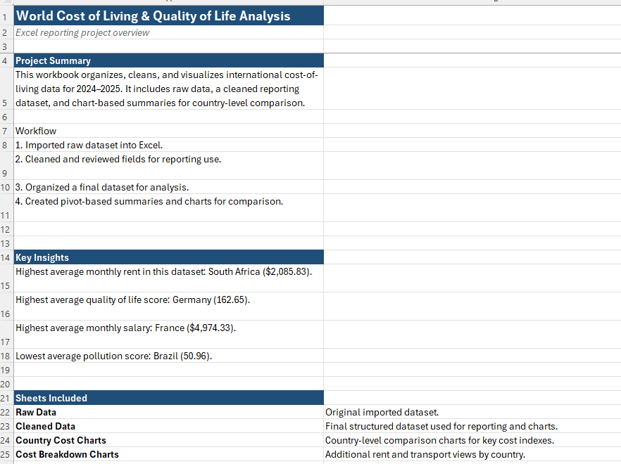
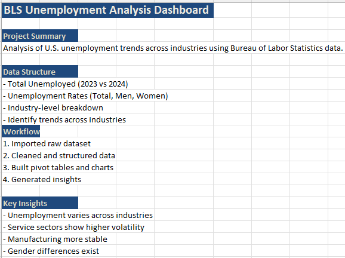

Tech, Data & Workflow Support for Small Businesses
Gwin Analytics helps small businesses fix technical issues, improve visibility into their data, and build simple systems that make day-to-day operations run smoother.
From broken forms and reporting problems to dashboards and workflow cleanup, I provide practical support for businesses that need clarity without adding a full internal IT or analytics team.
Power BIExcelSQLPythonData VisualizationBusiness AnalyticsTechnical SupportPower QueryPivot TablesVLOOKUPExcel Reporting
Need help with a dashboard, website issue, or workflow problem?
If something is broken, unclear, or slowing your business down, send over the issue and I’ll review it with you and help determine the best next step.
I specialize in Excel-based data analysis and reporting. My workflow includes cleaning raw datasets, structuring data with Power Query, and building pivot tables, charts, and visual summaries to identify trends and support decision-making.
These projects show how I take raw data from credible sources, prepare it for analysis, and turn it into clear reporting outputs that help communicate trends, comparisons, and decision-ready insights.
Cost of Living Analysis
Includes cleaned dataset, pivot tables, and visual reporting outputs
Excel-based reporting project analyzing global cost-of-living data across categories such as rent, food, transportation, and healthcare.
ExcelPower QueryPivot TablesVLOOKUPEconomic Data
Project Workflow
Imported and reviewed raw cost-of-living data from a credible public dataset
Cleaned and structured the data in Excel and Power Query
Prepared reporting-ready tables for comparison and analysis
Created charts and visual summaries to highlight patterns across countries
Key Insights
Rent showed the largest variation across countries, highlighting major regional cost differences
Transportation and food costs fluctuated more than healthcare across the dataset
Some countries showed consistently higher combined cost levels across multiple categories
This project demonstrates my ability to clean, structure, and analyze real-world datasets in Excel to produce clear reporting outputs.

Bureau of Labor Statistics • Economic Reporting Project
BLS Unemployment Analysis
Includes cleaned dataset, structured reporting views, and unemployment trend analysis by industry and demographic category
Excel-based analysis of Bureau of Labor Statistics data used to examine unemployment trends across industries, compare year-over-year changes, and highlight demographic differences in unemployment rates.
Imported public labor market data from the Bureau of Labor Statistics
Cleaned and structured the raw dataset into a reporting-ready Excel format
Standardized column names and organized data into analysis sections
Built industry, year-over-year, and demographic reporting views
Created charts to communicate unemployment trends more clearly
Key Insights
Unemployment rates vary significantly across industries rather than moving uniformly
Some sectors show greater year-over-year volatility than others
Demographic comparisons reveal differences in unemployment rates between men and women across industries
Structured visual reporting makes labor market trends easier to interpret and compare
What this project demonstrates
This project highlights my ability to work with public economic data, structure it into reporting-ready formats, and communicate labor market trends through Excel-based analysis.
This workbook includes an overview dashboard, cleaned data, and multiple analysis views for industry, year-over-year, and demographic reporting.

/problems-i-solve
Problems I Solve
I help small businesses solve practical tech, reporting, and workflow problems that affect visibility, usability, and day-to-day operations.
Dashboards are hard to read
Reports may be technically functional but still fail to clearly show what is happening in the business.
Reports show blank visuals or incorrect numbers
I help identify broken calculations, bad data relationships, and reporting issues so your numbers are accurate and presentation-ready.
Website forms are not coming through
If users are submitting forms but requests are not being received, I can review the setup and help pinpoint the failure.
Users cannot access pages or features
I troubleshoot broken pages, access issues, and feature problems that affect the customer or user experience.
A dashboard is needed quickly
For meetings, presentations, or stakeholder reviews, I can help turn business data into a cleaner, more usable reporting view.
Apps or websites feel confusing to use
If users are getting stuck or saying a system feels hard to use, I can review usability issues and identify improvement opportunities.
Workflows are too manual
I help businesses simplify repetitive processes with better reporting, clearer systems, and practical workflow improvements.
You have data but not clarity
Having numbers is not enough. I help turn raw business data into something decision-makers can actually understand and use.
Urgent Help Available
If you have a dashboard issue before a meeting, a reporting problem that needs quick review, or a technical issue affecting operations, urgent requests can be reviewed based on current availability.
/history
History
Gwin Analytics grew out of hands-on experience in technical support, ticket-based workflows, troubleshooting, and business operations. Over time, that foundation expanded into dashboard development and analytics work focused on helping businesses solve problems and better understand performance.
Today, Gwin Analytics provides practical support for small businesses that need help with technical issues, reporting clarity, and simple systems that work.
/projects
Selected Projects
Excel Reporting Projects
Excel-based data analysis projects focused on cleaning raw datasets, building visual reports, and presenting trends through structured reporting.
Browse the full collection of dashboards and analytics projects in one place.
Dashboard library updates will appear here.
/availability
Availability & Scheduling
Gwin Analytics works with a limited number of clients at a time to provide focused, high-quality support.
New requests are reviewed throughout the week, with most active project work scheduled during evening and weekend support hours.
To maintain quality and response time, only a small number of active client requests are taken on at once. If capacity is full, new requests may be scheduled for a later start date.
Current Status: Accepting new inquiries
/contact
Connect
View my work, connect with me, or reach out about a project, issue, or support request.
Need technical support, dashboard help, or a reporting solution?
I help small businesses troubleshoot software and website issues, improve dashboard clarity, and build simple reporting tools that track revenue, costs, jobs, and performance.
Urgent Request?
If you have a dashboard presentation coming up, a reporting issue that needs immediate review, or a technical problem affecting your workflow, include Urgent in your email subject line and I will review it based on availability.
All requests are handled through a structured, ticket-based system.
Client Support Hours
Requests can be submitted at any time. Responses and active support are provided during the hours below.
Time Zone: All hours are based on Eastern Time (EST), United States. Requests from other time zones are supported, with responses aligned to EST hours.
Support is provided during dedicated evening and weekend hours to ensure focused, high-quality service.
Urgent requests: May be reviewed outside of standard hours based on availability.
Please note: Responses and active support are provided during the hours listed above. Hours may be adjusted periodically based on workload and availability. Please refer to this page for the most up-to-date schedule and business updates.
Response Time: Most requests are reviewed and responded to within 12–24 hours during active support days.
How It Works
1
Send your request
Email your issue, request, or business need with as much detail as possible.
2
Issue review
I review the issue, assess the scope, and identify what needs to be fixed, built, or improved.
3
Next steps
You receive a response with recommended next steps, timeline, and pricing if applicable.
4
Remote completion
Once confirmed, the work is completed remotely, tested, and handed off clearly.
Ready to get started?
Have an issue with your website, dashboard, report, or business workflow? Reach out and I’ll take a look.